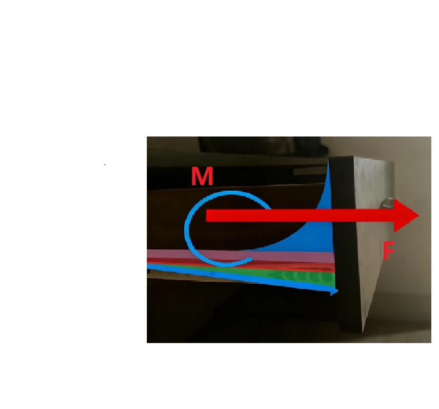

大连交通大学 · 智能建造23
我的原作抽屉前板的抗弯设计
郭焘宁
在课上，我们常通过“海绵”来理解受弯构件的应变分布。而在生活中，抽屉前板 是一个完美的对照案例。它不仅展示了梁的弯曲变形，更体现了工程中如何通过截面优化来抵抗外力。
在家具结构中，抽屉的前板指的是你拉开抽屉时，直接面对的那一块面板。它是抽屉的“脸面”，也是受力最复杂的部位。虽然它看起来只是个平面，但在力学上，它实际上是一根悬臂梁。
当你打开抽屉，手指接触并推动的那个垂直面，就是前板。
连接方式：它通常通过滑轨（导轨）与柜体相连。
功能：不仅用于收纳，还承担着防止内部物品掉落的侧向约束作用。
在结构设计原理中，前板被视为受弯构件。
受力状态：当人拉开抽屉时，前板受到一个向外的拉力（P），这会在前板根部产生巨大的弯矩（M）。
破坏模式：如果不加设计，它极易发生“侧向屈曲”或中间断裂。
一、力学问题分析
1. 意义：抽屉在开启和关闭时，前板会受到手施加的横向推力。如果不进行结构设计，薄板极易发生屈曲或断裂。
2. 影响因素
截面惯性矩 ()：决定了抗弯刚度。公式 显示，提高高度 是最有效的手段。
材料特性：木材或板材的弹性模量 决定了变形量。
3. 趋势 现代家具倾向于使用变截面设计（如加厚边缘）或组合结构（如内部支撑条），而非单纯增加厚度普通薄板 (危险)
二、受力状态可视化

外力方向：水平向外（由左向右）。
约束条件：前板通常被视为悬臂梁，一端固定于侧板/底座，另一端自由。
危险截面：固定端处的弯矩最大。
关键风险
注意：向外拉力会在前板上产生巨大的压应力。如果前板较薄或材质较软，极易在此处发生屈曲而非简单的断裂。
三、不同设计对比
普通薄板 (危险)
受力状态：纯受弯，无支撑。
后果：若受压区过窄，极易发生脆性破坏。
工程优化-抗弯设计 (安全)
设计细节：抽屉前板通常采用加厚边框或内部加强筋。
力学原理：通过扩大翼缘宽度（类似工字钢），显著增大 ，使 降低，防止开裂。
如果我们将抽屉前板设计成实心矩形，虽然强度足够，但成本极高且笨重。实际上，抽屉的设计完美诠释了“以形控力”。
1、外力作用 ()
当你拉开抽屉时，施加在把手上的力 传递到前板，转化为弯矩 。
2、中性轴变形
根据材料力学，前板上侧受压，下侧受拉。如果没有加强，受压区可能失稳。
3、结构响应
抽屉的侧板充当了“腹板”的角色，而前板的加厚边缘充当了“翼缘”。这种T型或L型截面，巧妙地利用了材料力学中的形心主惯性轴原理，用最少的材料实现了最大的刚度。
这是一份便于网页阅读的原作视图，保留提交内容的文字、图片和基本顺序；公开页面不显示学号。